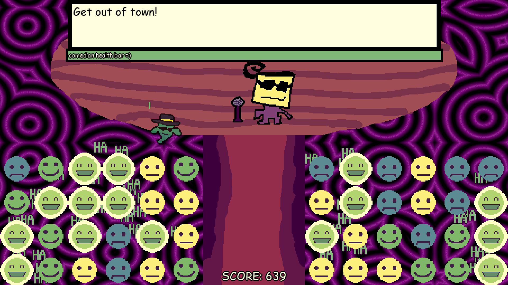
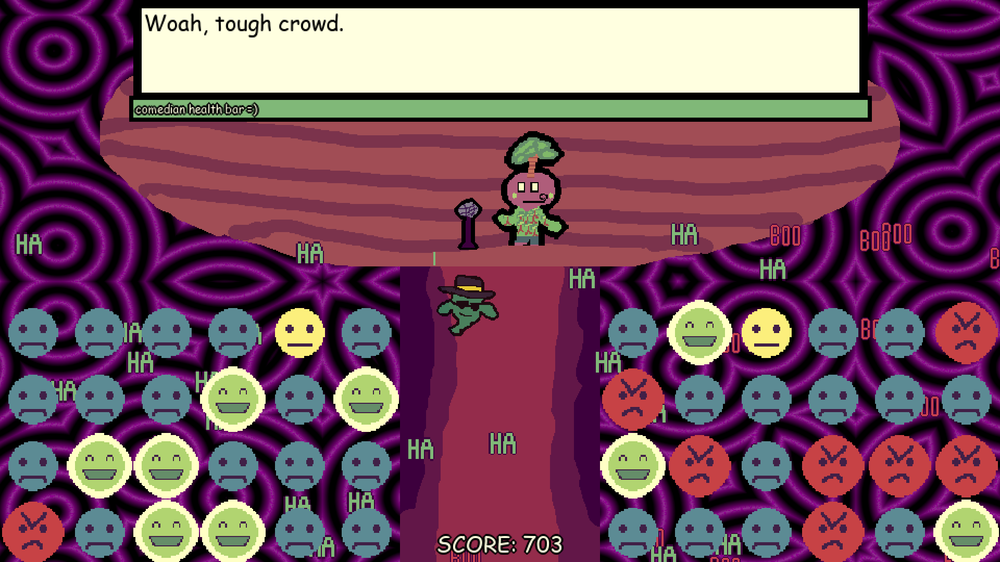
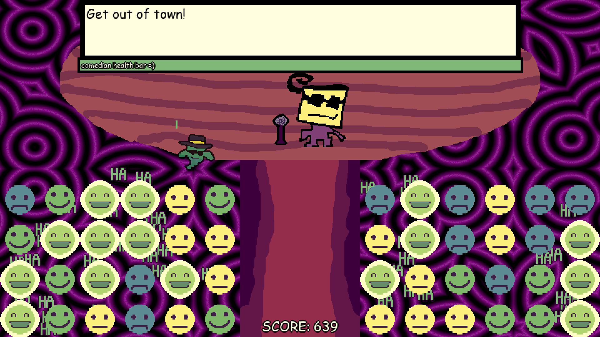
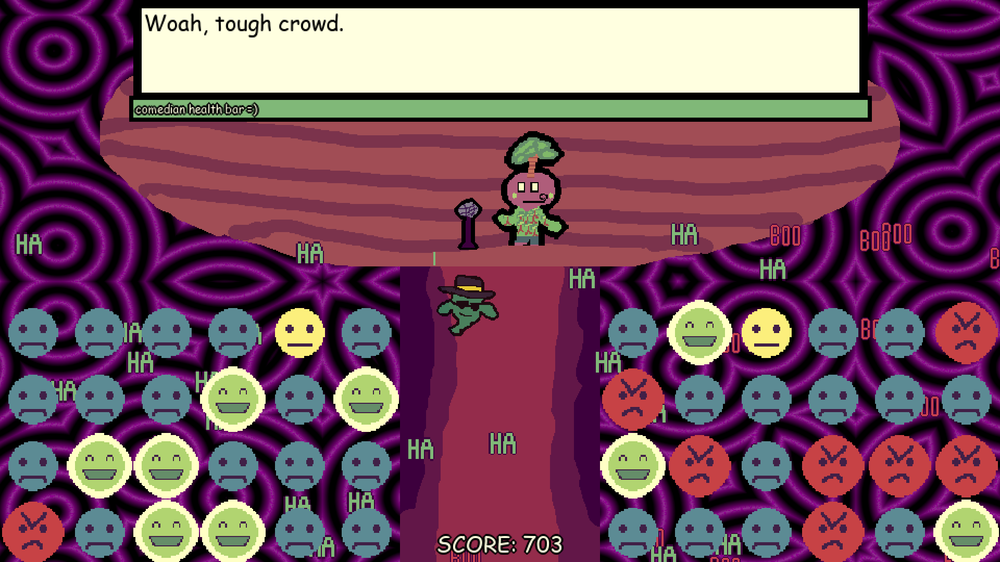

Phantom Comedy Theatre
Released: January 30th 2024
Genre: Comedy Arcade
Created by: Me
Role: Programmer, Art, Voices
Engine: GameMaker
Team Size: 1
Installs: A ton trust me
Game Description
Play through 6 different comedian standup routines, and try to keep the audience from depleting their comedian health bar.
My Experience
Phantom Comedy Theatre was made for Global Game Jam 2024. This was the first released game that I made by myself completely (except for help with extra voice acting). I spent a lot of time thinking of the concept, and this was my first time I did art for a game. I also had to write all the comedy scripts, and even though they're not supposed to be great comedians, it was still tough to write 5 comedy sets that were funny enough. I also haven't used GameMaker in a while, but had a lot of fun using it again! The concept is kind of like an arcade game, but there's a comedy standup happening in the background. The last level has completely random values and is infinite. All in all, the game is kinda funny.
Links:


Trailer
Screenshots
 


